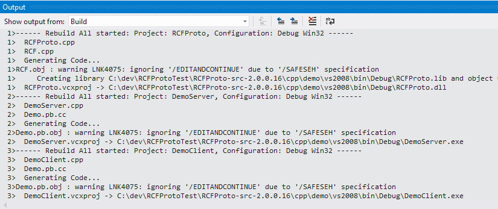

To build, right click on the solution in Visual Studio and press Build. A pre-build event will run protoc.exe to generate
Demo.pb.cc (containing source code for Protocol Buffer messages), and the projects will then be built. Your output window should look similar to this:

Output on successful build